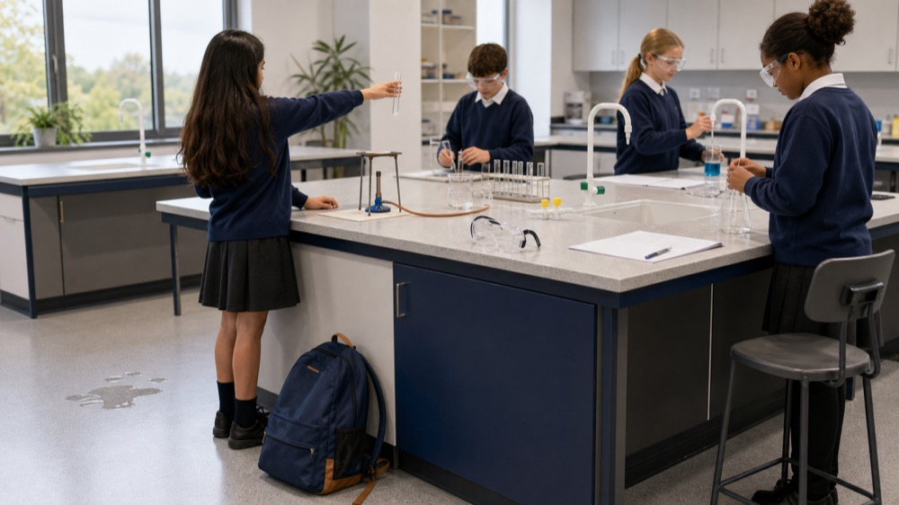

Science Lessons
All classes
All classes
/
Year 7 Science
/
Working scientifically
Year 7 Science
Working scientifically
Shared by 7/SCI/01 and 7/SCI/04. Complete the lessons in order.

Lessons
Lesson 01
Science transition diagnostic
Open lesson
→
Lesson 02
Equipment, diagrams and laboratory safety
Open lesson
→
Lesson 03
Plan a valid investigation
Open lesson
→
Lesson 04
Write a method another scientist can follow
Open lesson
→